games101
Games101学习笔记
1. 线性代数
1.1. 线性变换
我们首先举个二维平面下的例子。
二维线性变换可以写为：
$$ \begin{aligned} x' = ax + by. \\ y' = cx + dy. \end{aligned} $$
可以用矩阵 M 来表示： $$ \begin{bmatrix} x^{'}\\y^{'} \end{bmatrix}= \begin{bmatrix} a & b\\c & d \end{bmatrix} \begin{bmatrix} x\\y \end{bmatrix}. $$
这里有一个小技巧，就是将两个基向量 (1, 0), (0, 1) 分别代入，得到 (a, c), (b, d) 就是这两个基向量经过变换后的向量，从而快速得到矩阵 M。
1.2. 齐次坐标（Homogeneous Coordinates）
在线性变换的基础上添加平移变换。
线性变换不能表示平移： $$ \begin{bmatrix} x^{'}\\y^{'} \end{bmatrix}= \begin{bmatrix} a & b\\c & d \end{bmatrix} \begin{bmatrix} x\\y \end{bmatrix}+ \begin{bmatrix} t_x\\t_y \end{bmatrix}. $$
为了将平移也加入一般的变换形式，提出齐次坐标，即在原有的坐标上添加一维 w。依旧是采用二维情况进行举例：
- 2D点：(x, y, 1)T
- 2D向量：(x, y, 0)T
这样就可以只用矩阵乘法来表示线性变换+平移（先变换后平移）： $$ \begin{bmatrix} x^{'}\\y^{'}\\1 \end{bmatrix}= \begin{bmatrix} a & b & t_x\\c & d & t_y \\ 0 & 0 & 1 \end{bmatrix} \begin{bmatrix} x\\y\\1 \end{bmatrix}. $$
对于变换矩阵 M，求逆可得还原矩阵 M−1。
1.3. 复合变换
在三维情况下，由于采用右手坐标系，因此变换为矩阵左乘，变换顺序由右往左： $$ A_n(...A_2(A_1(x))) = A_n\cdots A_2 \cdot A_1 \cdot \begin{pmatrix} x\\y\\1 \end{pmatrix} $$
注：为什么右手坐标系要用矩阵左乘？由于这是笔者补档一年前的笔记，因此现在有点记不住了，问了大模型后说这是“约定俗成”的用法，在右手坐标系的图形库（如OpenGL）就是这么采用。相反，在左手坐标系的图形库（如DirectX）则反之。二者在数学上并无强制关联。
1.4. 三维变换
三维旋转矩阵（非齐次坐标），绕轴 n 转 α ： $$ R(n,\alpha)=\cos(\alpha)I+(1-\cos(\alpha))nn^T+\sin(\alpha) \begin{pmatrix} 0&-n_z&n_y\\ n_z&0&-n_x\\ -n_y&n_x&0 \end{pmatrix}. $$
1.5. 视图变换
MVP变换的V，或者MV。
想象你拿着相机进行拍照，需要哪些步骤？首先设置相机：
- 选择位置 e
- 选择观察方向 g
- 选择相机朝上的方向 t
为了方便，我们将相机移动到原点（场景的物体也随之移动），观察 −z，上方向为 y。这可以采用复合变换实现：
- 将相机移动到原点
- 将 g 旋转到 −z
- 将 t 旋转到 y
- 将 g × t 旋转到 x (事实上不需要这步，只不过方便后续数学推导表示)
上述变换除了第一步，后面旋转用矩阵难以实现，考虑逆复合变换。
假设矩阵为 Mview = RviewTview，其中平移矩阵很简单： $$ T_{view} = \begin{bmatrix} 1 & 0 & 0 & -x_e\\ 0 & 1 & 0 & -y_e\\ 0 & 0 & 1 & -z_e\\ 0 & 0 & 0 & 1 \end{bmatrix}. $$
对于旋转矩阵，考虑其逆变换：x 旋转至 g × t，y 旋转至 t，z 旋转至 −g： $$ R_{view}^{-1} = \begin{bmatrix} x_{g\times t} & x_t & x_{-g} & 0\\ y_{g\times t} & y_t & y_{-g} & 0\\ z_{g\times t} & z_t & z_{-g} & 0\\ 0 & 0 & 0 & 1 \end{bmatrix}. $$
不难发现这是个正交矩阵（废话，旋转矩阵都是正交矩阵，即便是齐次表示），因此可以直接转置得到 Rview： $$ R_{view} = \begin{bmatrix} x_{g\times t} & y_{g\times t} & z_{g\times t} & 0\\ x_t & y_t & z_t & 0\\ x_{-g} & y_{-g} & z_{-g} & 0\\ 0 & 0 & 0 & 1 \end{bmatrix}. $$
1.6. 投影变换
MVP中的P，将3D转换为2D。分为正交投影和透视投影。
二者区别如下，直接截图了：
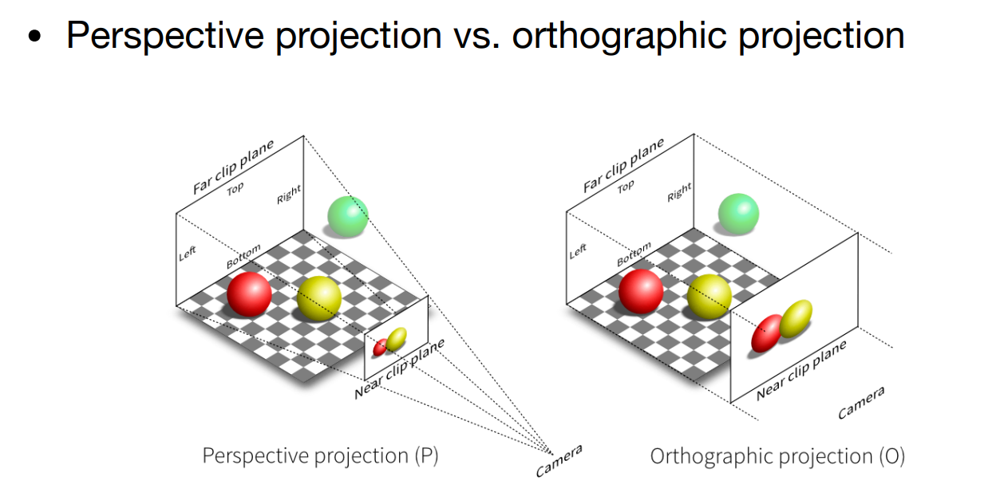
1.6.1. 正交投影
这是一种简单的投影方式：
- 首先用视图变换，让相机移动到原点，观察 −z，上方向为 y
- 然后直接去掉 z 轴
- 缩放至平面 [−1, 1]2
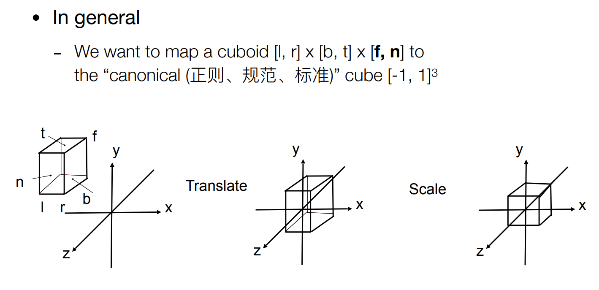
其对应的变换矩阵为： $$ M_{ortho}= \begin{bmatrix} \frac{2}{r-l} & 0 & 0 & 0\\ 0 & \frac{2}{t-b} & 0 & 0\\ 0 & 0 & \frac{2}{n-f} & 0\\ 0 & 0 & 0 & 1\\ \end{bmatrix} \begin{bmatrix} 1 & 0 & 0 & -\frac{r+l}{2}\\ 0 & 1 & 0 & -\frac{t+b}{2}\\ 0 & 0 & 1 & -\frac{n+f}{2}\\ 0 & 0 & 0 & 1\\ \end{bmatrix}. $$
1.6.2. 透视投影
远的物体更小，平行线不再不行。
首先将这个视锥体压缩成长方体 Mpersp → ortho，然后可以使用上述正交投影 Mortho。
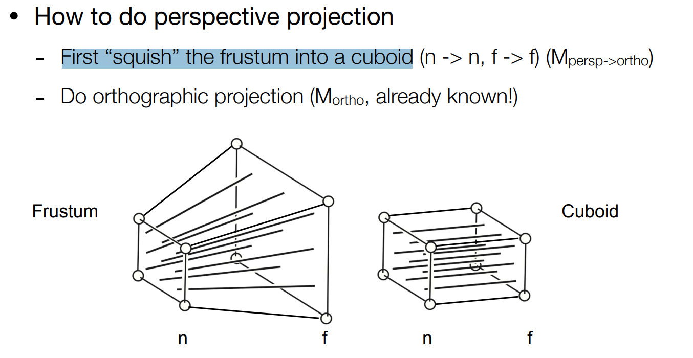
思考：在视锥体外面的物体如何考虑？在具体工程实现中可能会有这个问题，这里先挖坑。
主要的idea是上述提到过的“找出向量经过线性变换后在原坐标系的坐标值”。
首先考虑 y，这个很简单，根据相似三角形直接求出 $y^{'}=\frac{n}{z}y$：
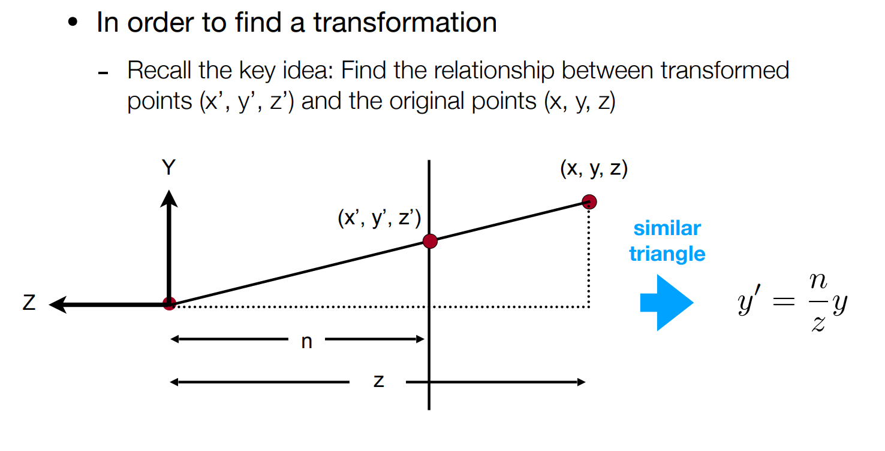
x 也一样：$x^{'}=\frac{n}{z}x$。
根据目前的信息，用齐次坐标表示变换前后的坐标： $$ \begin{pmatrix} x\\y\\z\\1 \end{pmatrix} \Rightarrow \begin{pmatrix} nx/z\\ny/z\\unknown\\1 \end{pmatrix} == \begin{pmatrix} nx\\ny\\unknown\\z \end{pmatrix}. $$
考虑根据变换前后，推出矩阵 Mpersp → ortho4 × 4：
$$ M_{persp\rightarrow ortho}^{4\times 4} \begin{pmatrix} x\\y\\z\\1 \end{pmatrix}= \begin{pmatrix} nx\\ny\\unknown\\z \end{pmatrix}. $$
注意到 x, y, z 都是变量，矩阵内部不能有这些变量，因此可以直接推出一些元素： $$ M_{persp\rightarrow ortho} = \begin{pmatrix} n & 0 & 0 & 0\\ 0 & n & 0 & 0\\ ? & ? & ? & ?\\ 0 & 0 & 1 & 0 \end{pmatrix}. $$
可以发现这个不是仿射变换矩阵的形式（最后一行前面都是0最后一个是1）。因此学到这里的时候，我知道，至少对于 z，它的变换肯定不是线性的。因此我有个疑问，就是明知道变换前后不是线性的，但为什么还能假定可以用矩阵来表示呢？矩阵可以表示齐次坐标的任意变换吗？
如何求出这些未知元素呢？这里我们考虑将坐标的 z 代入一些特殊值。
首先令 z = n： $$ \begin{pmatrix} x\\y\\n\\1 \end{pmatrix} \Rightarrow \begin{pmatrix} nx\\ny\\n^2\\n \end{pmatrix}. $$
可以得出矩阵第三行为： $$ \begin{pmatrix} 0&0&A&B \end{pmatrix} \begin{pmatrix} x\\y\\n\\1 \end{pmatrix} =n^2 $$
且可以得出：An + B = n2。
然后我们需要再来一个方程。我们知道所有在 f 面（即最后面的那一面）上的 z 是不会变的，因此有 $$ \begin{pmatrix} 0\\0\\f\\1 \end{pmatrix} \Rightarrow \begin{pmatrix} 0\\0\\f^2\\f \end{pmatrix}. $$
因此得到第二个方程 Af + B = f2。可以解得 A = n + f, B = −nf。
对于一般的 z，变换前后是变大还是变小了？（换句话说，更近还是更远了呢） 根据上述求解可以得知 $z^{'}=n+f-\dfrac{nf}{z}$，直接算 z − z′ ，乘 z 后可以求得 z2 − (n + f)z + nf < 0(f < z < n)。 但因为 z < 0，所以 z > z′，变换后的 z 更小，即更远了。
2. 光栅化
根据上面的MVP变换，我们得到了一个 [−1, 1]3 的正方体。光栅化就是把这个正方体映射到一个二维屏幕上。
假设我们的屏幕为 $[0,width] $，每一个方格代表一个像素，这里假设每个像素都是纯色。
一种可以直接想到的简单方法是，不管 z 坐标，先变换 xy 平面，可以直接写出变换矩阵： $$ M_{viewport} = \begin{pmatrix} \frac{width}{2} & 0 & 0 & \frac{width}{2}\\ 0 & \frac{height}{2} & 0 & \frac{height}{2}\\ 0 & 0 & 1 & 0\\ 0 & 0 & 0 & 1 \end{pmatrix} $$ .
2.1. 三角形的离散化
为什么选择三角形：
- 是最简单的多边形，可以组合成其它复杂多边形
- 绝对是2D的
- 绝对是凸的
- 方便重心插值
对于像素 (x, y)，通过采样的方式判断是否填充： $$ inside(t,x,y) = \begin{cases} 1 & (x,y)在三角形t内\\ 0 & otherwise \end{cases}. $$
像素的中心实际上为 (x + 0.5, y + 0.5)，我们只需要判断这个中心是否在三角形内部即可，这可以用叉积实现，判断该点是否都在三个方向一致的边向量的左边/右边。
2.2. 走样、信号与滤波
只通过上述对像素中心进行采样的光栅化方式，会产生锯齿（走样）。
采样在计算机图形学中是个十分常用的概念，但其往往却会产生一系列问题，称之为artifacts：
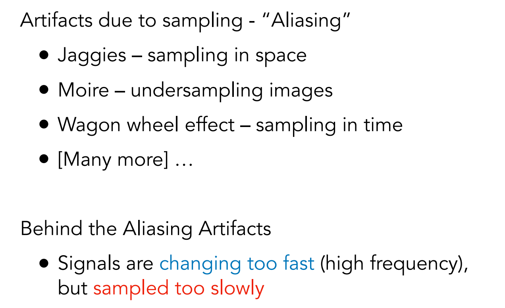
经典的走样包括锯齿、摩尔纹、车轮效应，前两者是空间上采用的问题，后者是时间上采样的问题。究其本质，是采样的速度跟不上信号变化的速度。
傅里叶级数展开：任何周期函数都可以展开为不同频率的正余弦函数的线性组合加上一个常数。
傅里叶（逆）变换：可以将时域信号与频域信号相互转换。
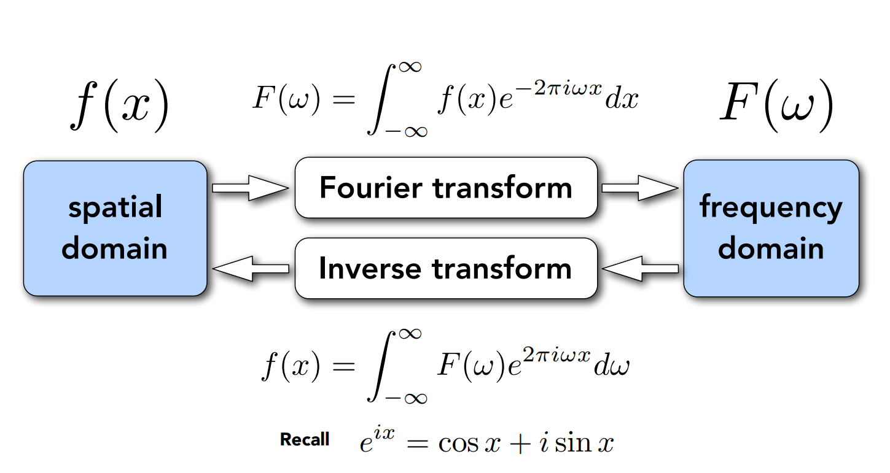
对于低频率的信号，采用低频率的采样方式，我们可以根据采样点重建原信号。
而对于高频率的信号，采用低频率的采样方式，我们可能会错误地重建一个低频率信号。（这事实上就是摩尔纹出现的原理，对原图片进行降采样，可能会得到一个变化较少的纹路）
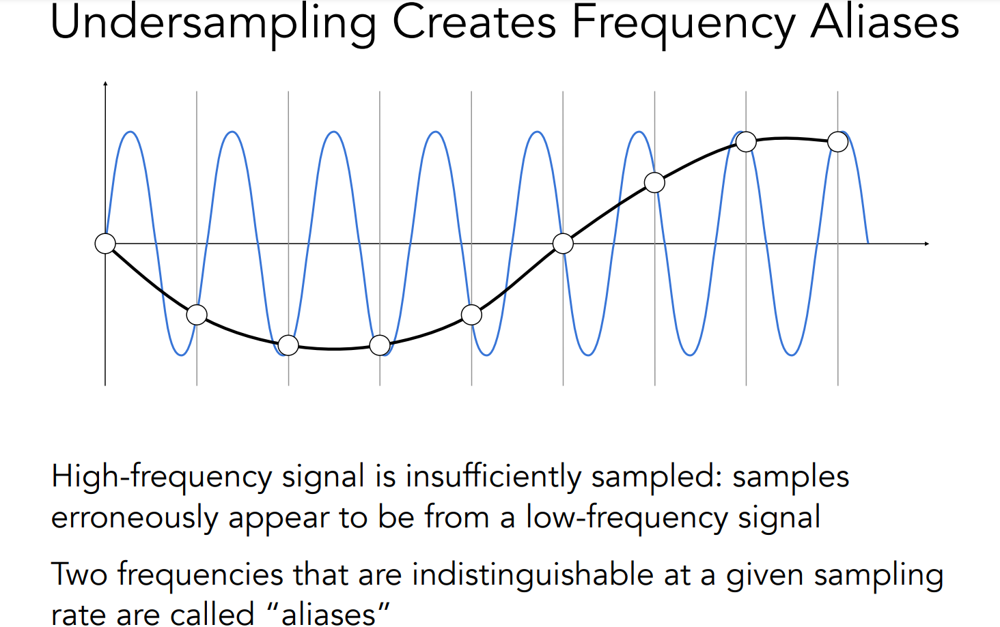
滤波：删除原信号在某些频率上的内容。
滤掉低频，原图片剩下高频的内容，对应的大概率是边界部分。
滤掉高频，原图片显眼的部分被去除，产生类似于模糊的效果。
卷积：这个学过CNN的多少都有点印象，在图形学中也是一样，拿个卷积核在那对每个像素作加权平均。
卷积定理：空间域的卷积等于频域的乘积，反之亦然。
因此在原图片上进行卷积，相当于先用傅里叶变换将图片变为频谱，然后和卷积核的频谱形式进行相乘，最后用傅里叶逆变换变化回来。
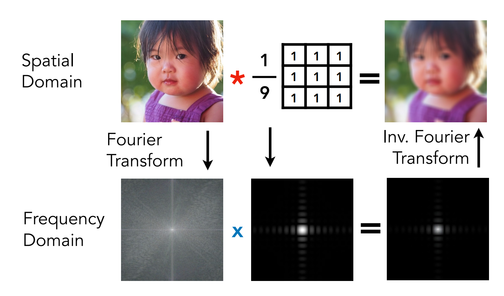
值得注意的是，这里的均值滤波器经过傅里叶变换后得到的是一个低通滤波器。而滤波器尺寸越大，所得到的低通滤波器越集中于低频率。
2.3. 抗锯齿（反走样）
前面提到，我们产生走样的原因是采样频率低于信号频率。
用上述信号的原理来解释，可以理解为下图：
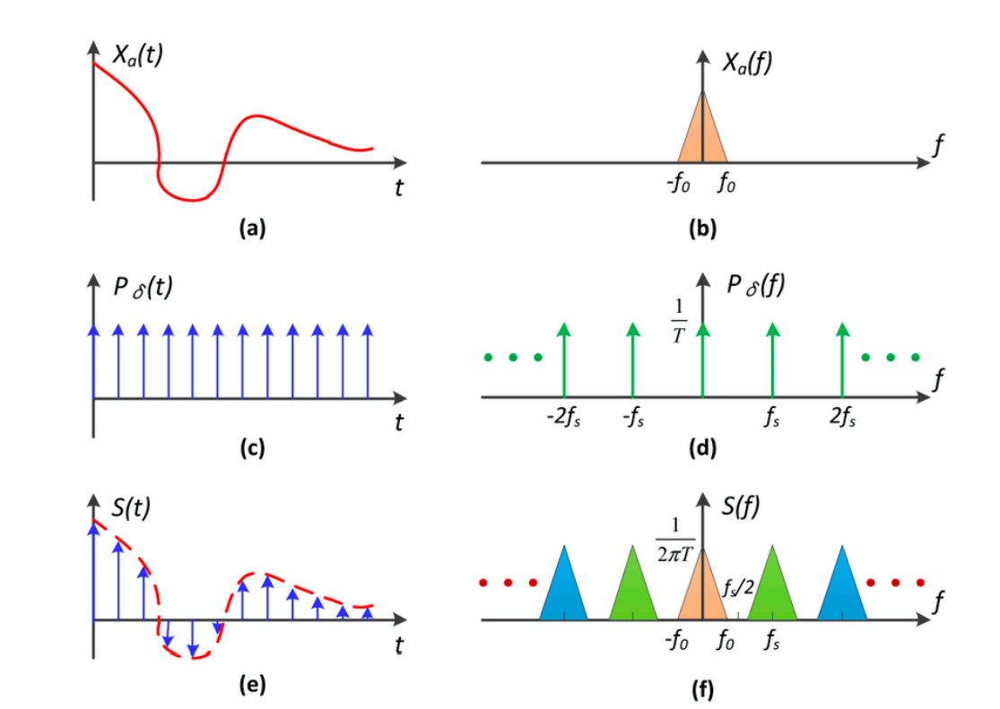
这里(a)是我们的采样函数，(c)是我们的采样点（冲激函数），(e)是我们最终采样得到的函数。右边是它们经过傅里叶变换后的频谱形式。
可以看出，对一个函数进行采样，在频率上相当于重复原函数的频谱内容。
而走样在频率上，是重复频谱之间的混合交叉：
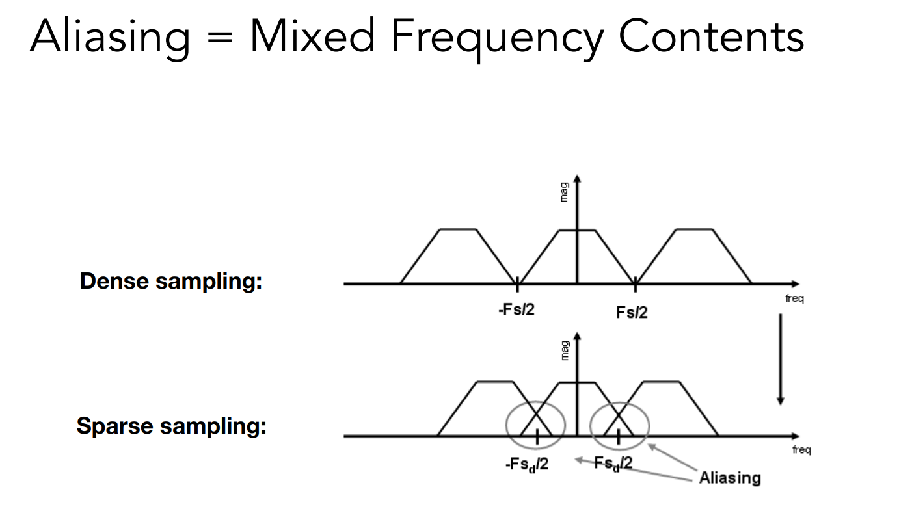
tip：采样频率越高（冲激函数频率越高），在频谱形式中频率越低，越不容易产生交叉。
所以我们想要反走样，可以从两步考虑： - 提升采样频率，这毫无意义 - 降低采样函数频率（这样会让函数在频谱上显得更”窄”）
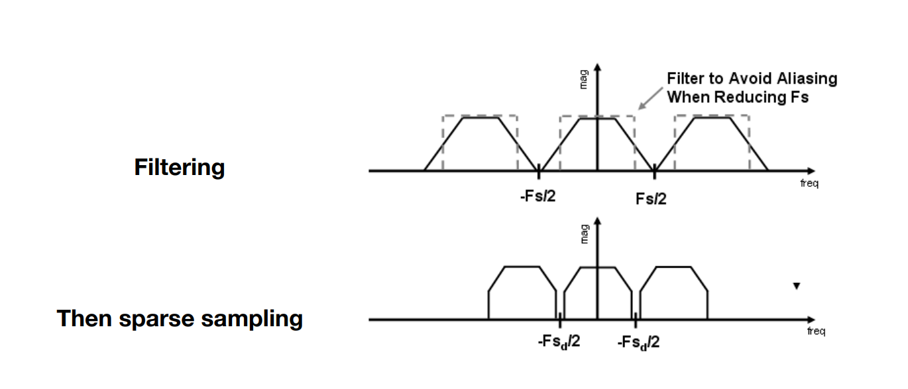
上面也提到了，降低频率相当于在空间域上使用滤波，因此这里的抗锯齿方案是：
对进行光栅化的三角形提前模糊，然后再采样。
具体实现是针对每单个像素而言的（相当于1x1滤波器），本质为二值平均。
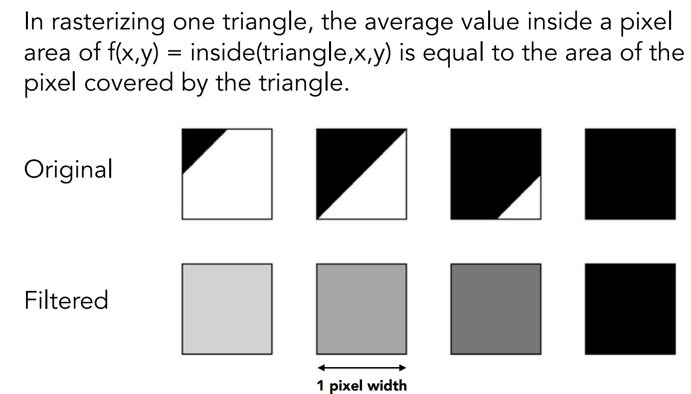
当然要计算三角形在每个像素中覆盖的比例是件很耗性能的工作，因此有了一种近似的模糊方法MSAA。
2.3.1. MSAA
原理很简单，对每个像素，不再是只对中心进行采样，而是取若干坐标，进行混合平均。
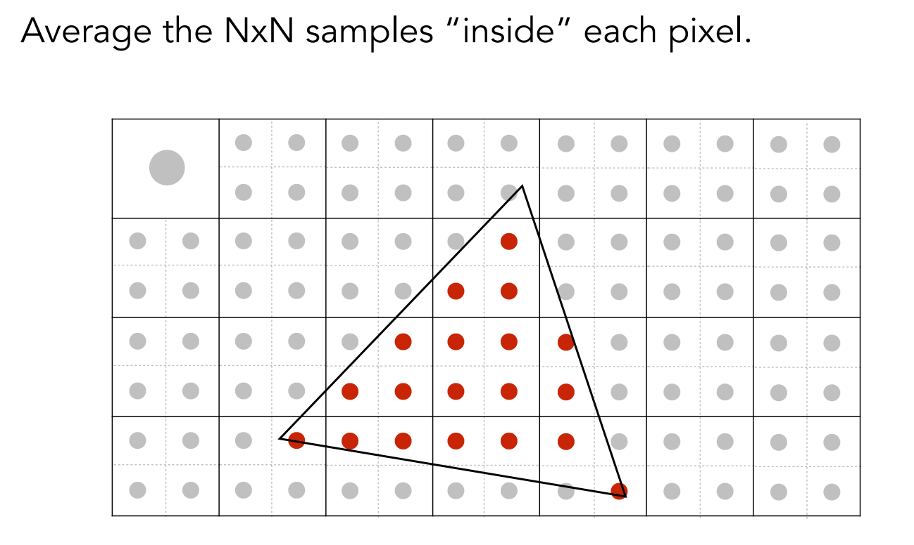
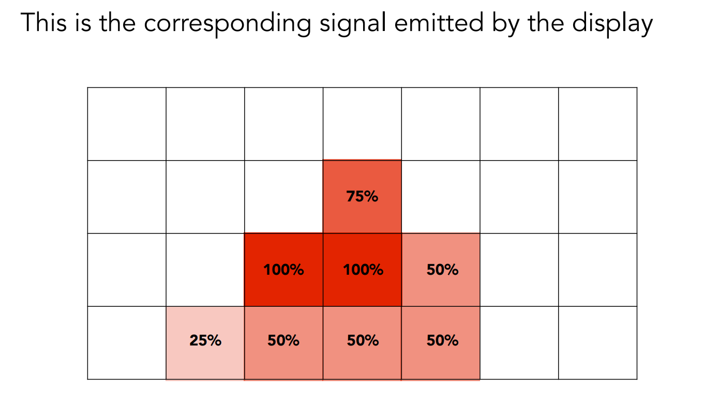
事实上MSAA在拟合模糊的时候已经把采样也给做了，因此就省了一个步骤。
MSAA的问题也很明显，就是超采样方式带来的性能损耗。因此还有其它的方式，例如FXAA、TAA以及你最喜欢的DLSS。
2.4. 深度测试
如果我们要光栅化多个三角形，那么就需要使用各三角形的深度信息。
2.4.1. Z-Buffer
关键idea是以像素为单位进行考虑。
算法思想很简单，对于同一个像素，如果被多个三角形给覆盖，取深度值最低的那个。(这里实际实现的时候应该将深度反向为正值了)
在实现的过程中，我们维护两个 buffer
：一个是最终的结果，一个是深度图：
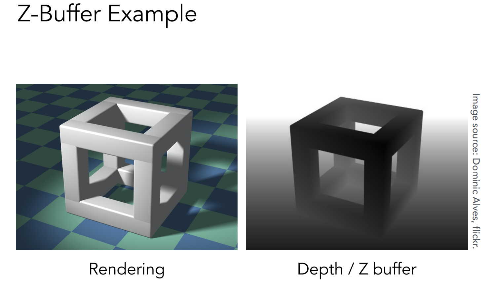
伪代码如下：
1 | for(each triangle T) |
假设每个三角形占用的像素数量是常数，那么该算法是 O(n) 的。
Tip：深度测试不适用于透明物体。
2.5. 阴影
算法：Shadow Mapping
Idea：对于没有被阴影的点，它应该同时被相机和点光源照到。
因此我们可以考虑对点光源设置深度图。然后考虑相机看到的点，将其映射到点光源的深度图上，对比深度值是否与深度图记录上的一致。
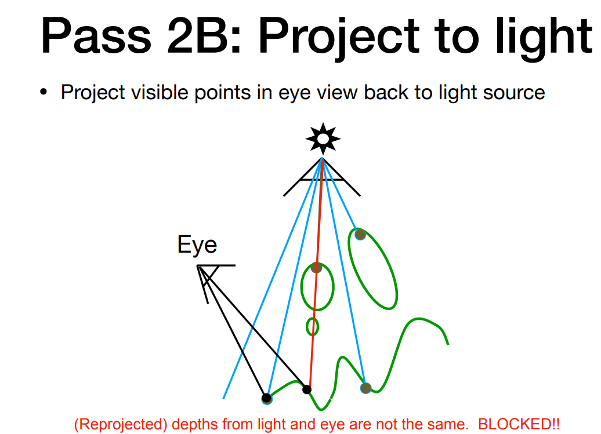
这种方法产生的阴影会有走样。阴影质量取决于shadow map分辨率。
对于点光源，其生成的阴影是硬阴影（hard shadow），因为阴影里的任何地方都接触不到光。
然而对于有体积的光源，则会有软阴影部分（soft shadow）
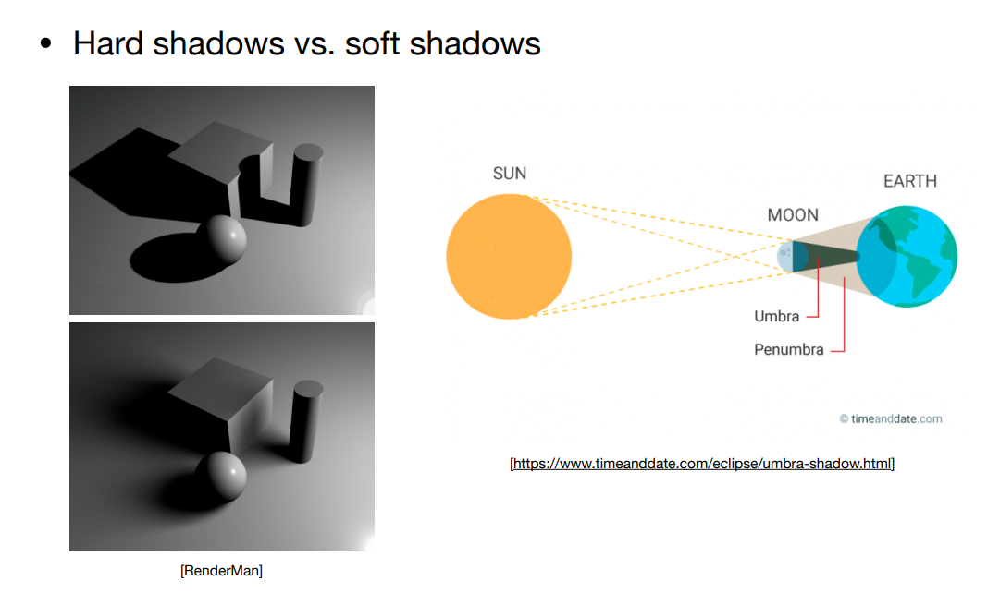
3. 着色
3.1. Blinn-Phong反射模型
该模型将光照分为三个部分：镜面高光、漫反射、环境光（间接光照）
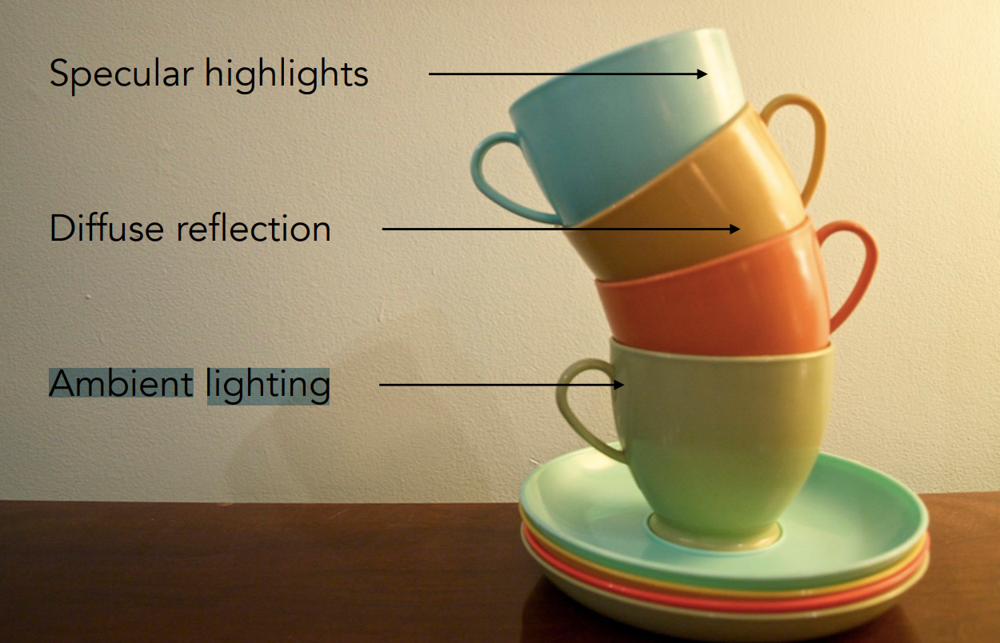
3.1.1. 着色是局部行为
对于着色这一步，我们只考虑在一个点上的操作（称之为着色点）。
对于一个着色点，我们可以有以下输入：
- 观察者视角 v
- 着色表面（近似为平面）法向量 n
- 光照方向 l （对每个光都有一个）
- 表面参数（颜色、光泽度等）
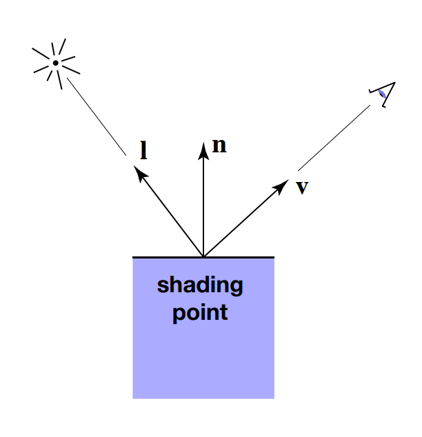
着色是局部的，代表某个着色点不受外部环境影响，因此着色并不产生阴影。
3.1.2. 漫反射
漫反射的性质是，光照经过一个表面后向各个方向均匀散射。因此在任意视角观察同一个着色点，产生的结果是相同的。
我们首先明确，在给定上述的输入后，我们要的输出是漫反射光。具体而言应该是RGB形式的三维向量。
首先上面提到，我们的输出和观察方向无关。
其次，对于光照的方向，有 Lambert 余弦定理，即光照强度与光照和法线的夹角的余弦值成正比。
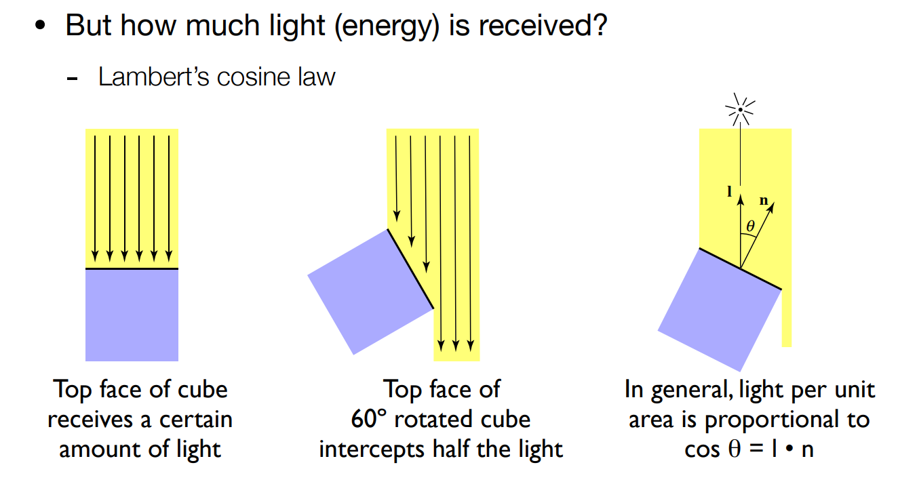
再者，我们考虑到物体离光源越远，所吸收的能量会越少。（这里应该是指点光源）
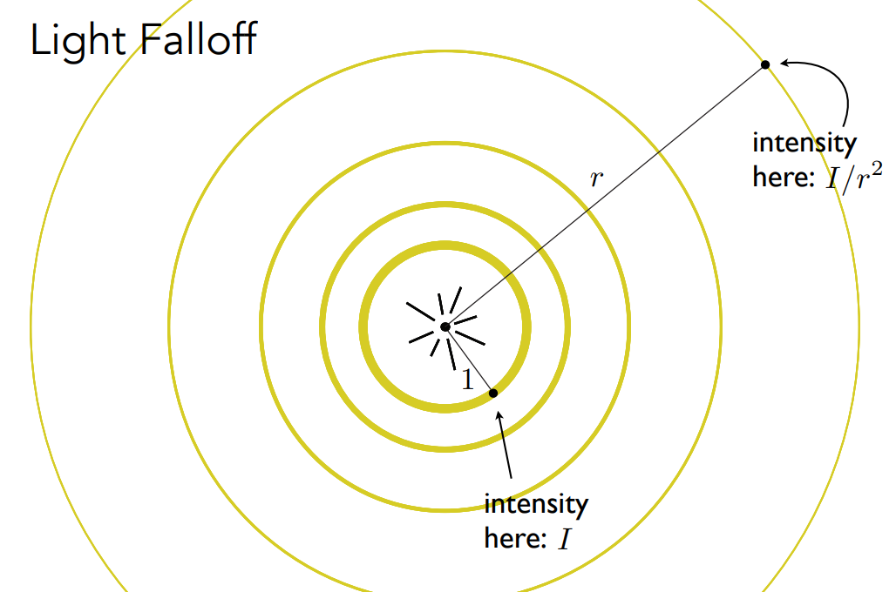
根据能量守恒定律，以光源为中心的任何半径 r 形成的球面所拥有的能量是恒定的。假设 r = 1 时能量为 l，那么对于任意的 r，能量为 $\frac{l}{r^2}$。
最后我们得到的输出也与着色点本身有关，假设着色点本身的颜色会产生一个向量 kd，那么得到的漫反射光为： Ld = kd(I/r2)max (0, n ⋅ l).
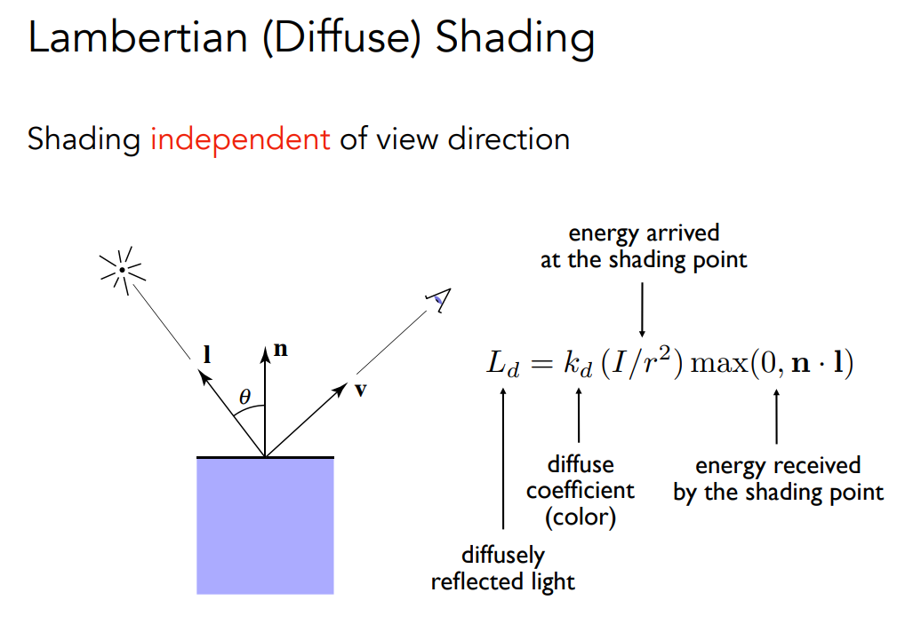
3.1.3. 镜面反射
镜面反射的强度与漫反射不同，它将与我们的观察视角有关。根据实际经验来讲，如果观察视角和反射光很接近，那么就能看到镜面反射的高光，如下图：
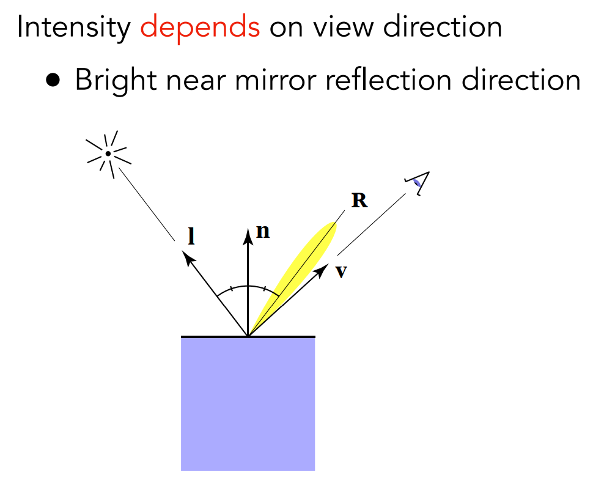
事实上对于朴素的Phong反射模型，它确实采用了 v 和反射方向 R 之间的夹角作为参数。但事实上这个 R 是比较难算的，所以Blinn-Phong模型采取了一些简化措施：
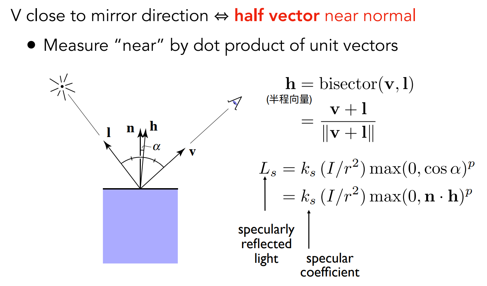
这里模型先计算入射方向和视角的半程向量（俗称角平分线）h，然后用 h 和法向量 n 之间的角来代替v 和反射方向 R 之间的夹角（实际上是大小为一半的关系）。
至于夹角项上的指数 p，是为了控制高光更加集中。
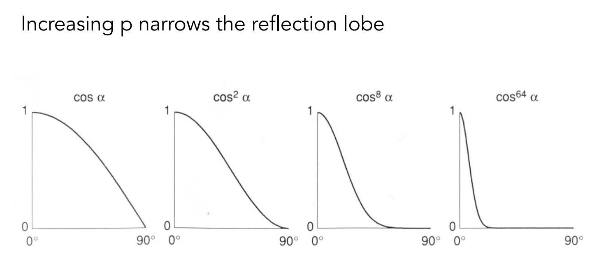
对于相同的角，如果指数 p 越高，其得到的强度越低。
对于常项 ks，一般指定高光为白光，所以应该是个很大的值。另外这里模型进行了简化，略掉了漫反射中光照方向和法向量夹角的一项。
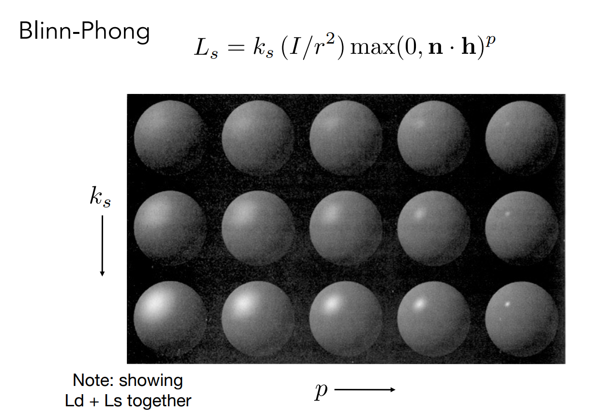
3.1.4. 环境光
非常简单，这里Blinn-Phong做了简化：环境光照强度为常数 la。
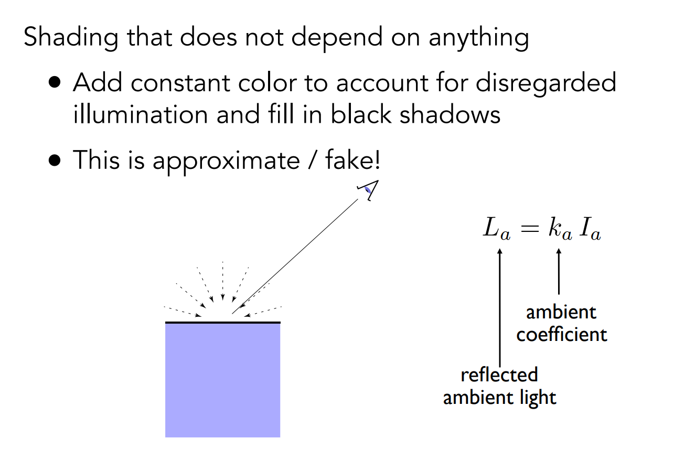
主要的作用是保证任何地方都能有光照，即都不是黑的。（下图是环境光+漫反射+镜面反射=BP反射）
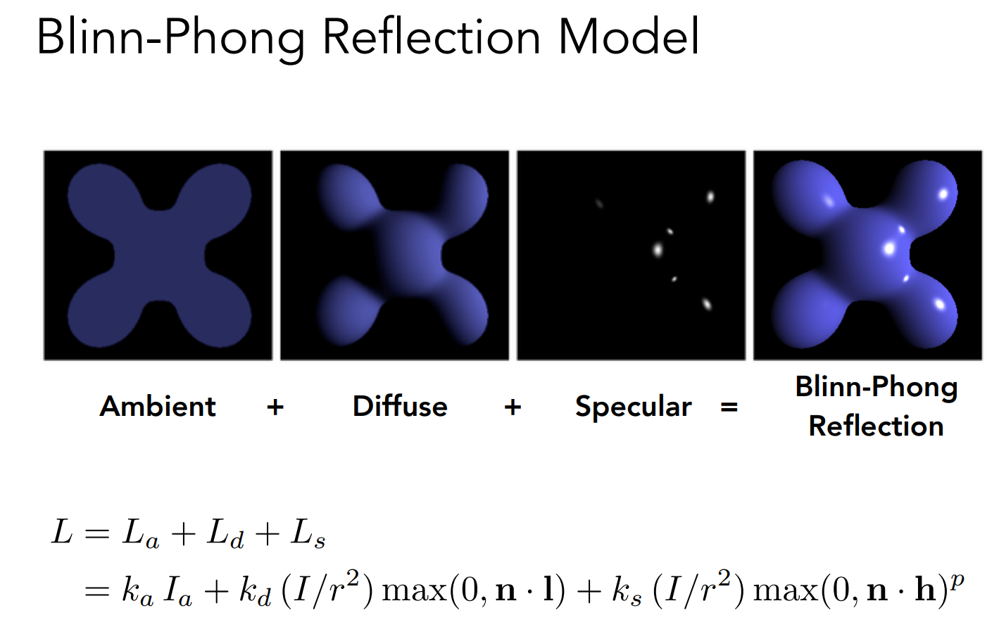
3.2. 着色频率
对于同一个模型，我们可以以不同的单位进行着色（例如三角形平面、三角形顶点、像素等），这就是着色频率。显然着色频率影响最终效果质量，但其也与性能有关。
- Flat shading：即以三角形为单位进行着色，同一个三角形上的颜色是一样的。
- Gouraud shading：以顶点为单位进行着色（至于顶点的法向量后面会说），顶点内部三角形用插值着色。
- Phong shading：以像素为单位进行着色（与Blinn-Phong反射模型无关），像素的法向量用插值算出来。
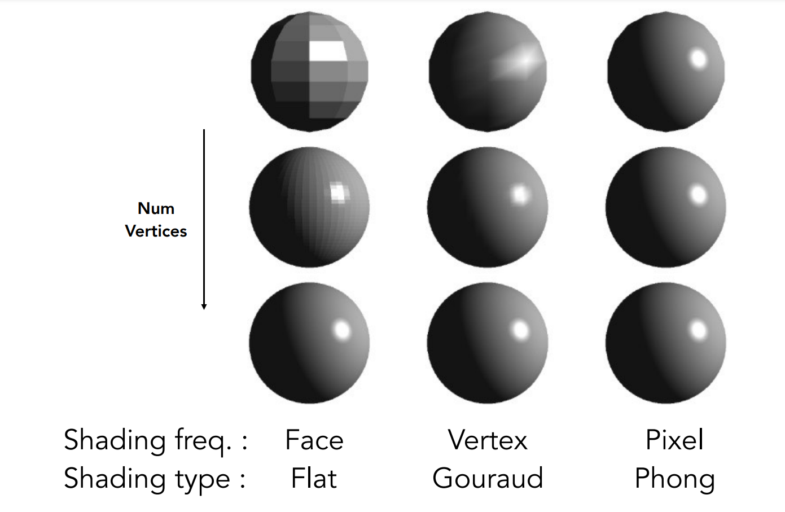
对于三角形顶点的法向量，可以对顶点周围的所有三角形的法向量求平均：$N_v=\dfrac{\sum_i N_i}{\|\sum_i N_i\|}$ 。对于像素的法向量，采用重心插值法（后面介绍）。
3.3. 图形管线（实时渲染管线）
我们现在掌握了光栅化和部分着色的知识，现在总结一下如何将一个3D物体渲染到屏幕上：
- 首先，我们的输入是三维空间的点（以及点与点之间维护的三角形的关系）。
- 然后我们开始顶点处理（Vertex Processing）：采用MVP变换，将摄像机移到原点，上方向旋转到 y 轴，视角朝向 −z。然后将整个点变换到 [−1, 1]3 的正方体内。
- 然后进行三角形处理（Triangle Processing）：没啥好处理的，点的变换并不影响其联通关系。
- 然后进行光栅化（Rasterization）：将三维压到二维屏幕空间。
- 然后进行片段处理（Fragment Processing）：可以理解为对每个像素进行处理（反走样、深度测试、着色等），当然这里的Fragment并不一定指像素，对于MSAA它可能会指超采样点。
- 然后进行Framebuffer Operations，这里我还不知道这是什么东西，课件也没说。
- 最后就可以渲染到屏幕上了。
对于图形管线的具体内容参见课件。注意对于某个特定的步骤，例如着色的时候，它的操作可能是对每个像素进行着色（片段处理），但是在着色的过程中我们事实上需要运用到点的三维信息，因此它可能也包含了图形管线的顶点处理。后面的Texture Mapping也是一样。
对于现代gpu，其内部高度并行化（非常多的core，想象一下可以并行地对不同像素进行渲染），且大部分都实现了特定的一套图形管线。当然内部有用户可定义的部分（可编程的部分），其中有一个叫做shader。
3.3.1. shader
shader指的是一段特定编程语言的程序，专门关注对一个顶点（或者片段）的着色操作。
https://www.shadertoy.com/view/ld3Gz2
3.4. 纹理映射（Texture Mapping）
我们之前可能会关注到Blinn-Phong反射模型中漫反射项的 kd，我理解为它包含了着色点的颜色信息，而这个颜色信息是需要通过纹理映射得到的。
首先我们需要确认一个观点，就是任意的三维物体都可以展开成一个二维的矩形（俗称uv变换）。
那个展示的图太掉san了，自己去看课件（主要的思想是，三维空间中的顶点与二维展开后的纹理有一一对应关系。
具体如何转换的不在本课程讨论范围内。
3.5. 重心坐标法
通过三角形三个顶点的属性，对内部任意点的属性进行插值。
我们可以插值得到的属性有：纹理坐标、颜色、法向量等。
重心坐标：以三个顶点的坐标为基准进行线性组合，所得到的系数即重心坐标。
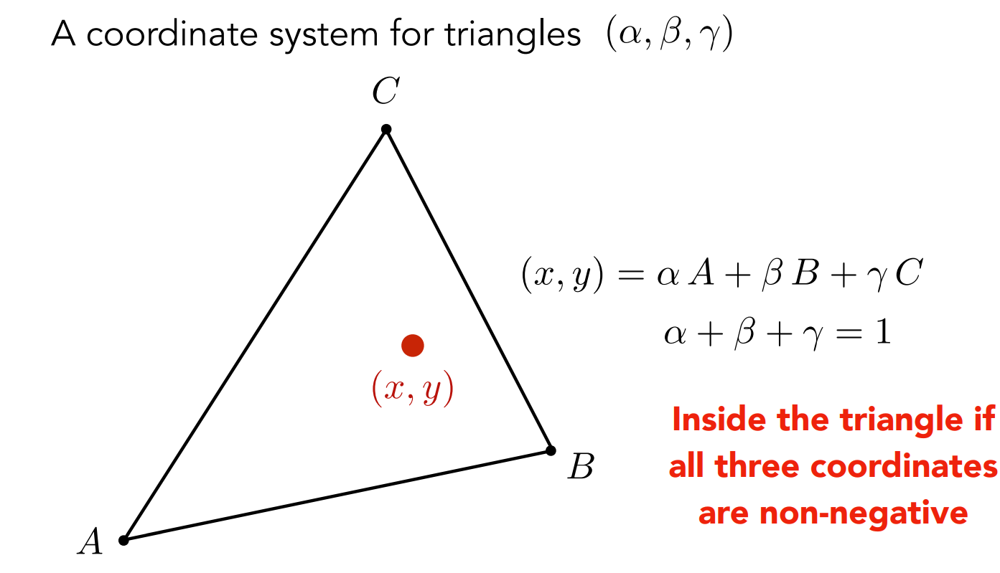
注意三个系数之和为1，且非负。
可以通过计算三个点的对顶三角形的面积比来得到系数：
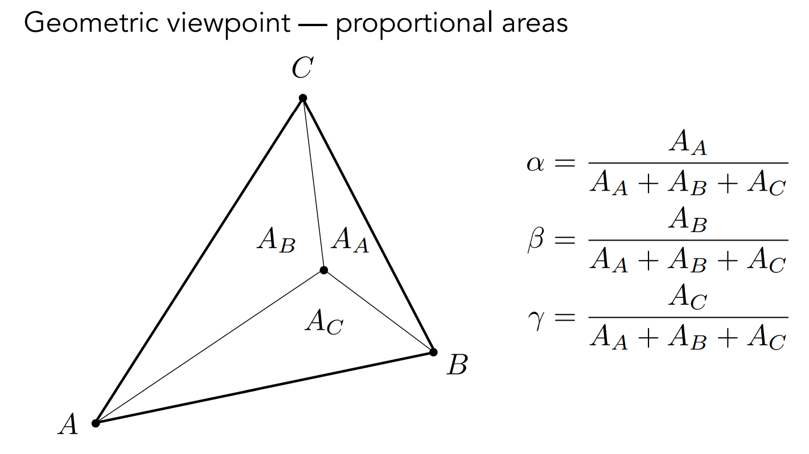
这里的重心坐标对于3D的三角形和光栅化后的2D三角形并不是不变的。对于同一个点，变换前后的重心坐标可能有变，这表明对于一些三维的属性（例如作业二对深度的插值），我们需要将二维的点进行逆变换后得到的三维点在三维三角形的情况下计算它的重心坐标，然后进行插值。
具体的插值方式是用系数进行属性的线性组合：
V = αVA + βVB + γVC.
因此我们可以通过重心坐标对每个像素中心插值出它在纹理上的坐标。对于纹理，它也是一个由许多像素构成的二维图像，不是连续的东西。因此我们假设它是一堆离散的整型坐标形成的二维空间。如果得到的纹理坐标不是整数，我们这里朴素的将其round到最近的纹理像素区域，并根据该像素设置渲染的像素的颜色（漫发射项的 kd），但事实上这么做会有问题。
3.6. 纹理过小
解释一下过小是什么意思，我们知道纹理也是一张图片，也有属于自己的像素，这里叫做texel（纹理元素）。我对于纹理过小的理解是，纹理相比于屏幕的分辨率过小，因此用上述朴素方法（对重心坐标插值纹理坐标然后round）进行采色的时候会出现一片区域都映射到同一个texel的情况，这时候会导致渲染效果很差：
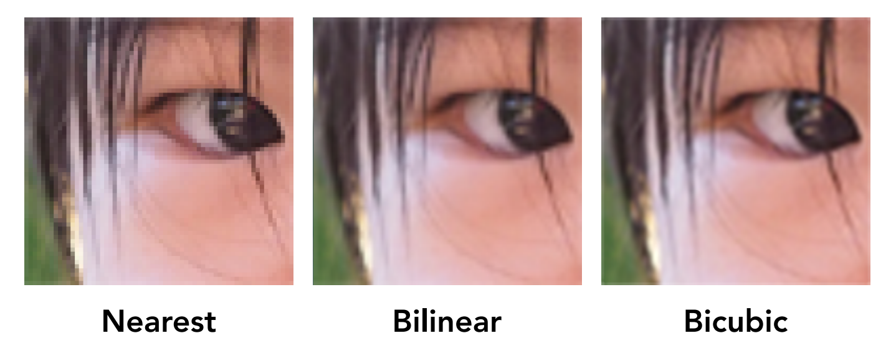
为了不造成同一片像素映射到同一个texel的情况，我们采用双线性插值，即考虑最近的4个texel，然后根据这4个texel的颜色与纹理坐标位置之间的关系进行插值，具体实现很简单：
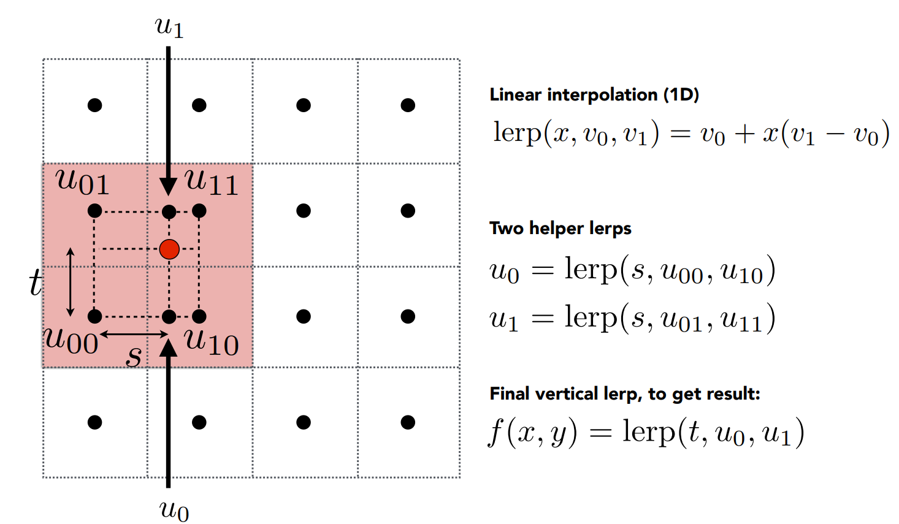
双线性插值=三次单线性插值
3.7. 纹理过大
纹理过小指的是多个屏幕像素映射到单个texel，那么纹理过大就是单个屏幕像素包含多个texel（或者反过来说，多个texel对应单个pixel）。会有什么情况呢？
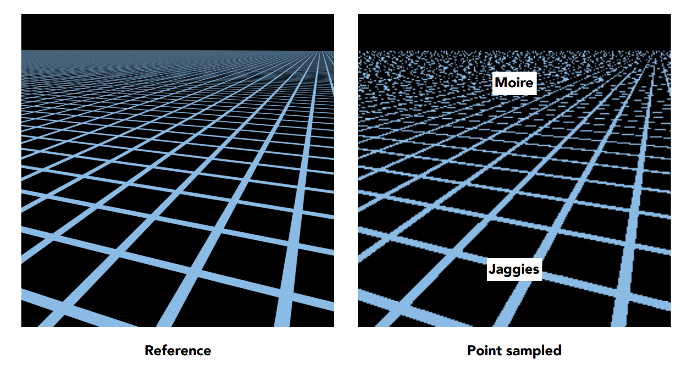
这里我们观察到了之前光栅化一样的走样问题。我们之前反走样采取的措施是MSAA，即针对一个屏幕像素设置多个超采样点，来解决“采样速度跟不上信号变化速度”的问题。
这里我们照样可以这么干，对于一个屏幕像素，设置512个超采样点，都映射到texel上，求平均，可得到较好的效果：
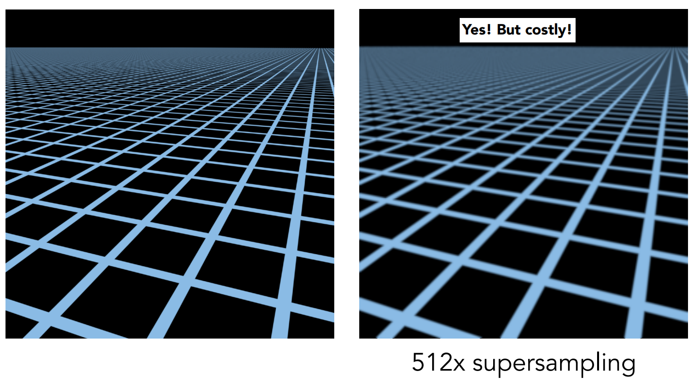
但是超采样的想法特别耗性能。从信号的角度上进行分析，由于我们采样的速度需要与信号变化速度一致，因此不可避免地会需要提高采样频率。因此我们直接放弃采样的想法，使用ACM大法！
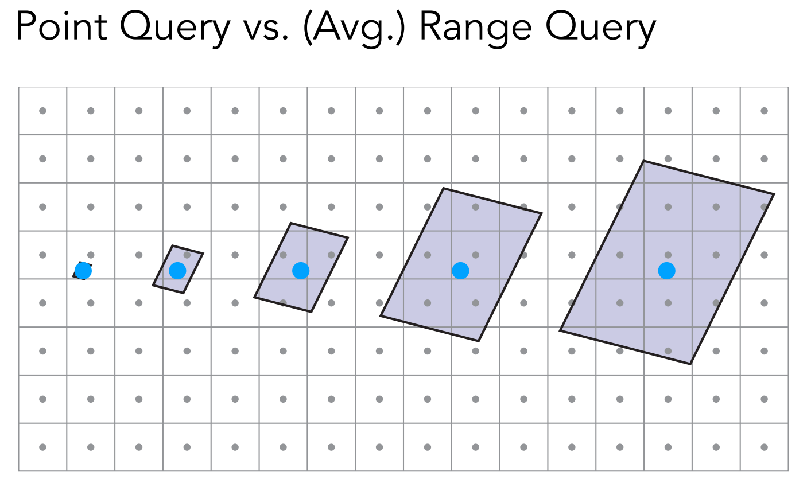
我们所要解决的就是这种“范围查询”的问题，将一定范围内的texel进行求平均。而前面对于纹理过小采用的双线性插值，事实上是一种点查询问题。
3.8. mipmap
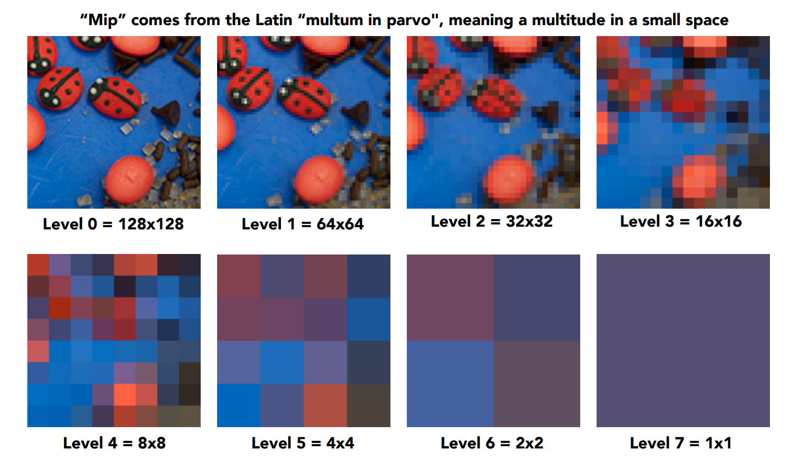
这里提出了level的概念，每一个level是上一个level的1/4。
首先我们要清楚，mipmap的输入必须是一个正方形，因此对于一个屏幕像素，我们需要用某些方式求出其对应在纹理上的正方形。
开始可以先找周围像素中心的映射点：
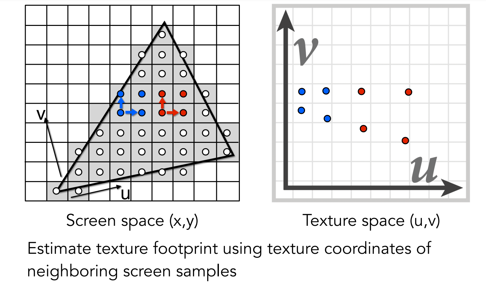
然后用一种很神秘的方式得到正方形边长 L：
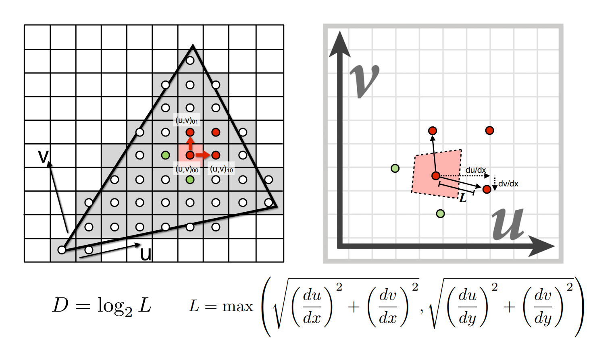
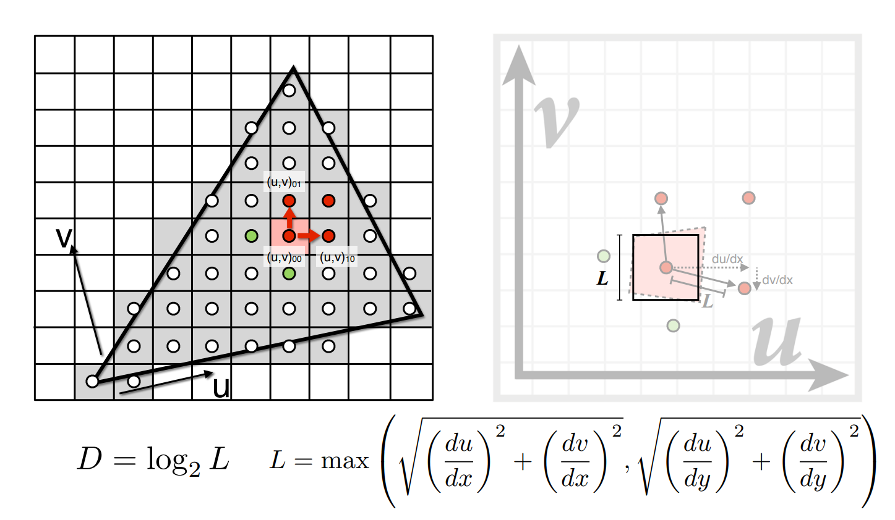
假设我们得到的边长 L = 4，那么我们可以在 level = log 4 = 2 的mipmap上进行采样。（Round to the nearest level）
由于可能会有正方形边与texture网格对齐问题，这里同样可以使用双线性插值得到最终结果。
但是考虑到 L 大概率不是2的幂，即深度可能是小数，因此可以采用三线性插值，在深度上再来一次线性插值：
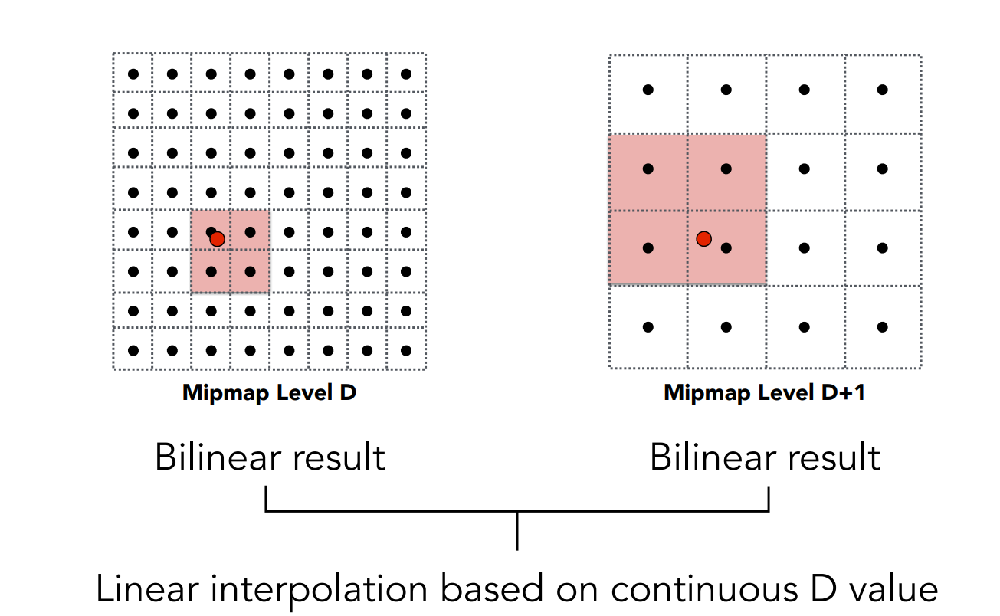
这里你可能会觉得，这个方法在很多地方用了近似。首先是三线性插值本身就是种近似（感觉线性方法效果都不是很好？），其次是我们这里的输入限制了为与坐标轴平行的正方形，这可能和像素实际覆盖的范围的形状有很大出入。实际上确实，对于上面的一个例子，采用朴素的mipmap和三线性插值得到的效果：
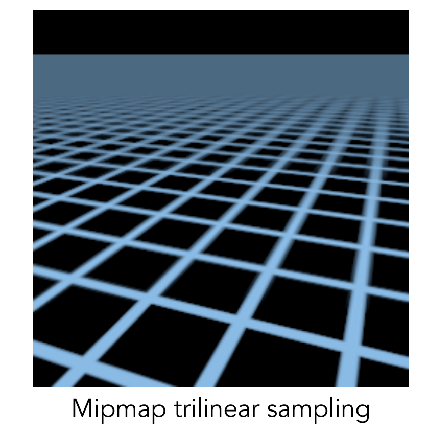
可以发现有很明显的模糊，这就是因为形状之间的出入：
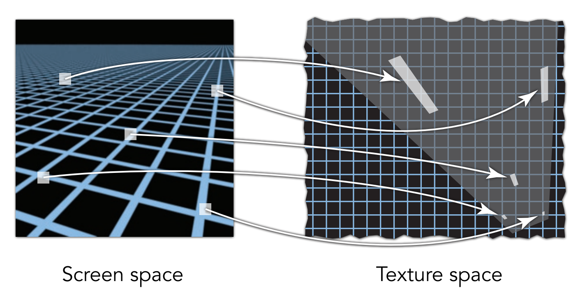
一种缓解这种形状出入的方式是用长方形来代替正方形，这个叫各向异性过滤（Anisotropic Filtering）。当然还有种更好的方法叫EWA filtering，可以去课件了解一下。
3.9. 纹理映射的其它应用
纹理不一定只映射颜色。
一种应用是让纹理包含深度信息：
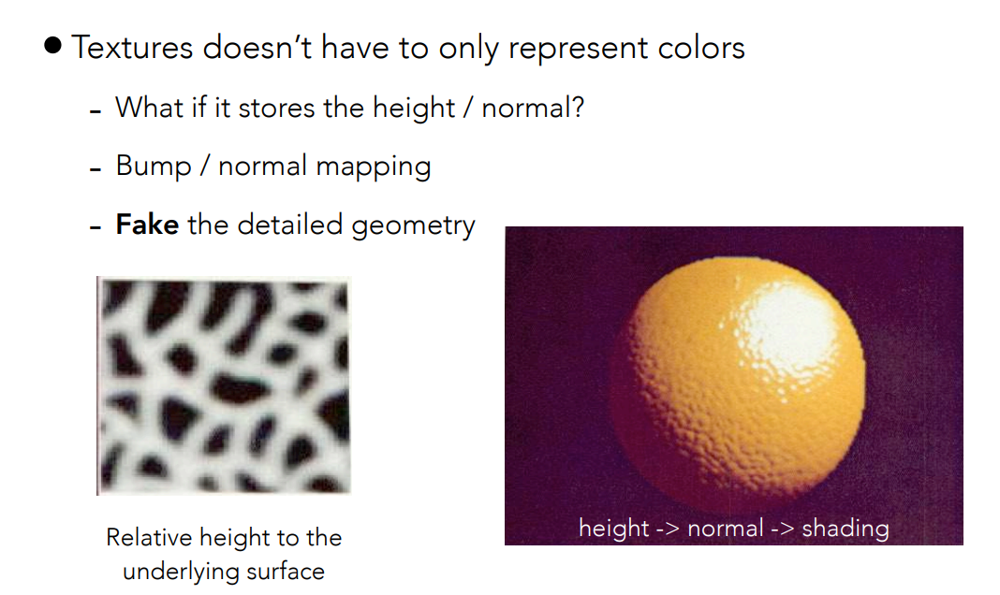
这种深度信息让渲染出来的物体具有凹凸不平的视觉视角。然而它只是一种欺骗视觉的手段，几何形体本身还是没变。
具体欺骗视觉的方式是修改了每个渲染点的法向量：
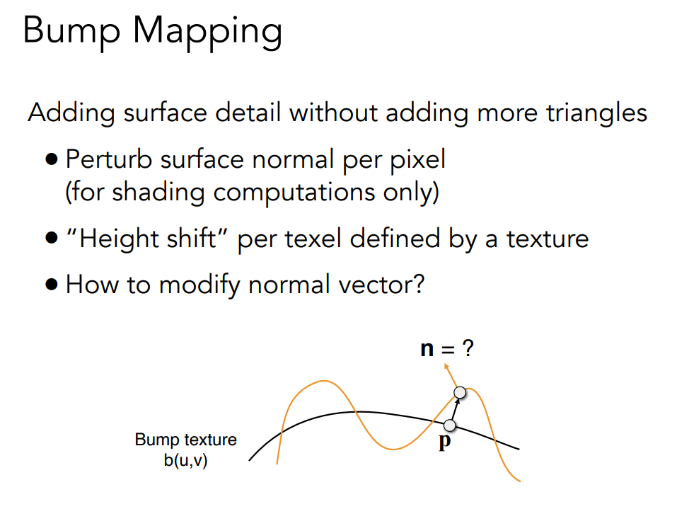
至于为什么通过改变法向量就能有凹凸不平的效果，首先肯定和阴影无关（着色是局部行为）。我认为单纯就是它改变了Blinn-Phone模型中法向量和光线与视觉的角度，影响了亮不亮而已。
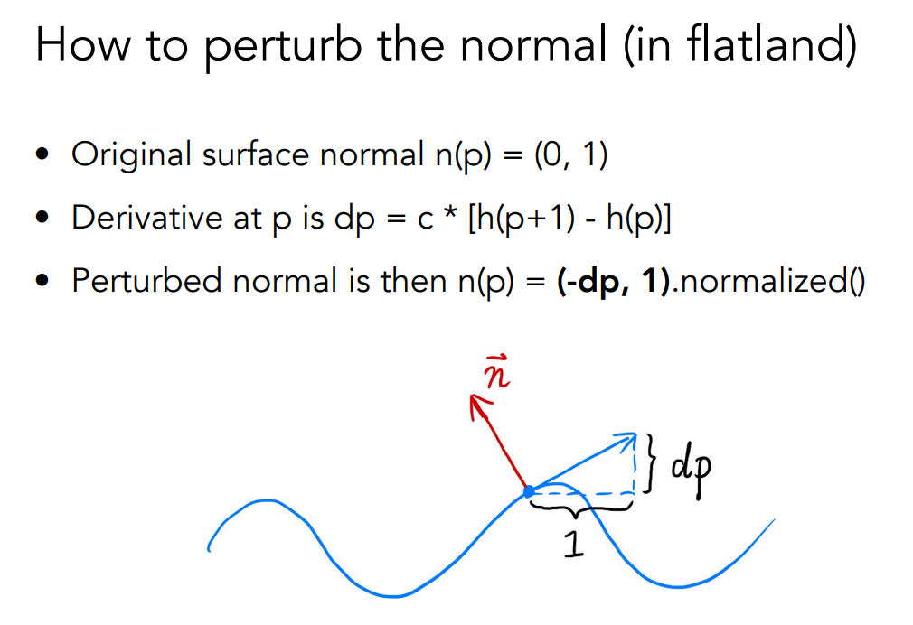
这个是2D情况，我们重点看看3D：
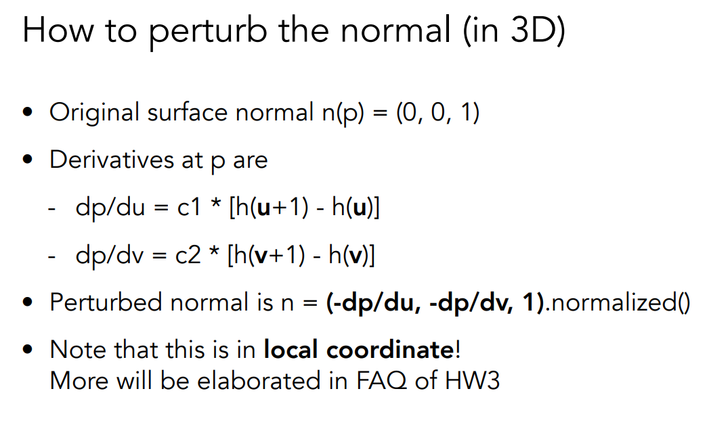